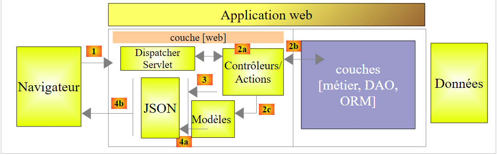
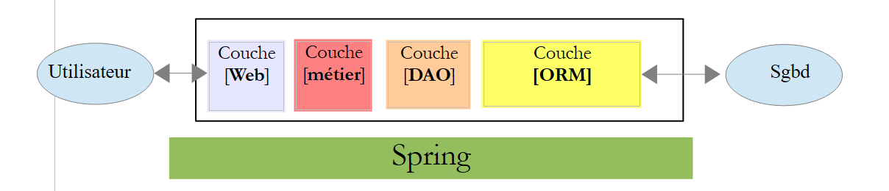
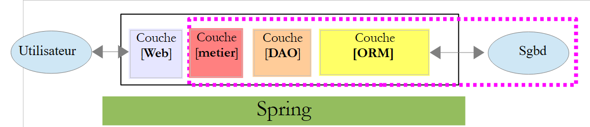
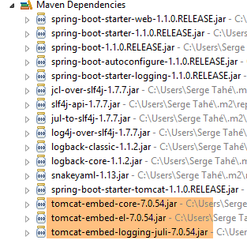

16. Introduction to Spring MVC
16.1. The Role of Spring MVC in a Web Application
Let’s situate Spring MVC within the development of a web application. Most often, it will be built on a multi-tier architecture such as the following:
 |
- the [Web] layer is the layer that interacts with the web application user. The user interacts with the web application through web pages displayed in a browser. Spring MVC resides in this layer and only in this layer;
- the [business] layer implements the application’s business logic, such as calculating a salary or an invoice. This layer uses data from the user via the [Web] layer and from the DBMS via the [DAO] layer;
- the [DAO] (Data Access Objects) layer, the [ORM] (Object Relational Mapper) layer, and the JDBC driver manage access to data in the DBMS. The [ORM] layer acts as a bridge between the objects handled by the [DAO] layer and the rows and columns of tables in a relational database. A specification called JPA (Java Persistence API) allows you to abstract away from the ORM being used if it implements these specifications. This will be the case in this tutorial, so from now on we will refer to the ORM layer as the JPA layer;
- The integration of these layers is handled by the Spring framework;
16.2. The Spring MVC Development Model
Spring MVC implements the MVC (Model–View–Controller) architectural pattern as follows:
 |
The processing of a client request proceeds as follows:
- request - the requested URLs are of the form http://machine:port/contexte/Action/param1/param2/....?p1=v1&p2=v2&... The [Front Controller] uses a configuration file or Java annotations to "route" the request to the correct controller and the correct action within that controller. To do this, it uses the [Action] field of the URL. The rest of the URL [/param1/param2/...] consists of optional parameters that will be passed to the action. The "C" in MVC here refers to the chain [Front Controller, Controller, Action]. If no controller can handle the requested action, the web server will respond that the requested URL was not found.
- Processing
- (continued)
- The selected action can use the parameters that the [Front Controller] passed to it. These can come from several sources:
- the [/param1/param2/...] path of the URL,
- the [p1=v1&p2=v2] parameters of the URL,
- from parameters posted by the browser with its request;
- When processing the user's request, the action may need the [business] layer [2b]. Once the client's request has been processed, it can trigger various responses. A classic example is:
- an error page if the request could not be processed correctly
- a confirmation page otherwise
- The action instructs a specific view to render [3]. This view will display data known as the view model. This is the "M" in MVC. The action will create this view model [2c] and instruct a view to render [3];
- Response - The selected view V uses the model M created by the action to initialize the dynamic parts of the HTML response it must send to the client, then sends this response.
For a web service / JSON, the previous architecture is slightly modified:
 |
- in [4a], the model, which is a Java class, is converted into a JSON string by a JSON library;
- in [4b], this JSON string is sent to the browser;
Now, let’s clarify the relationship between MVC web architecture and layered architecture. Depending on how the model is defined, these two concepts may or may not be related. Consider a single-layer Spring MVC web application:
 |
If we implement the [Web] layer with Spring MVC, we will indeed have an MVC web architecture but not a multi-layer architecture. Here, the [Web] layer will handle everything: presentation, business logic, and data access. It is the actions that will perform this work.
Now, let’s consider a multi-layer web architecture:
 |
The [Web] layer can be implemented without a framework and without following the MVC model. We then have a multi-layer architecture, but the Web layer does not implement the MVC model.
For example, in the .NET world, the [Web] layer above can be implemented with ASP.NET MVC, resulting in a layered architecture with an MVC-style [Web] layer. Having done this, we can replace this ASP.NET MVC layer with a classic ASP.NET layer (WebForms) while keeping the rest (business logic, DAO, ORM) unchanged. We then have a layered architecture with a [Web] layer that is no longer MVC-based.
In MVC, we said that the M model was that of the V view, i.e., the set of data displayed by the V view. Another definition of the M model in MVC is given:
 |
Many authors consider that what lies to the right of the [Web] layer forms the M model of MVC. To avoid ambiguity, we can refer to:
- the domain model when referring to everything to the right of the [Web] layer
- the view model when referring to the data displayed by a view V
Hereinafter, the term "M model" will refer exclusively to the model of a V view.
16.3. A Web/JSON project with Spring MVC
The site [http://spring.io/guides] offers getting-started tutorials to explore the Spring ecosystem. We will follow one of them to discover the Maven configuration required for a Spring MVC project.
16.3.1. The demo project
 |
- In [1], we import one of the Spring guides;
 |
- in [2], we select the [Rest Service] example;
- in [3], we select the Maven project;
- in [4], we select the final version of the guide;
- in [5], we confirm;
- in [6], the imported project;
Web services accessible via standard URLs that return JSON data are often called REST (REpresentational State Transfer) services. A service is said to be RESTful if it follows certain rules.
Let’s now examine the imported project, starting with its Maven configuration.
16.3.2. Maven Configuration
The [pom.xml] file is as follows:
<?xml version="1.0" encoding="UTF-8"?>
<project xmlns="http://maven.apache.org/POM/4.0.0" xmlns:xsi="http://www.w3.org/2001/XMLSchema-instance"
xsi:schemaLocation="http://maven.apache.org/POM/4.0.0 http://maven.apache.org/xsd/maven-4.0.0.xsd">
<modelVersion>4.0.0</modelVersion>
<groupId>org.springframework</groupId>
<artifactId>gs-rest-service</artifactId>
<version>0.1.0</version>
<parent>
<groupId>org.springframework.boot</groupId>
<artifactId>spring-boot-starter-parent</artifactId>
<version>1.2.2.RELEASE</version>
</parent>
<dependencies>
<dependency>
<groupId>org.springframework.boot</groupId>
<artifactId>spring-boot-starter-web</artifactId>
</dependency>
</dependencies>
<properties>
<start-class>hello.Application</start-class>
</properties>
<build>
<plugins>
<plugin>
<groupId>org.springframework.boot</groupId>
<artifactId>spring-boot-maven-plugin</artifactId>
</plugin>
</plugins>
</build>
<repositories>
<repository>
<id>spring-releases</id>
<url>https://repo.spring.io/libs-release</url>
</repository>
</repositories>
<pluginRepositories>
<pluginRepository>
<id>spring-releases</id>
<url>https://repo.spring.io/libs-release</url>
</pluginRepository>
</pluginRepositories>
</project>
- lines 6–8: the Maven project properties. A [<packaging>] tag specifying the type of file produced by the Maven build is missing. In its absence, the [jar] type is used. The application is therefore a console-based executable application, not a web application, in which case the packaging would be [war];
- lines 10–14: The Maven project has a parent project [spring-boot-starter-parent]. This defines most of the project’s dependencies. They may be sufficient, in which case no additional dependencies are added, or they may not be, in which case the missing dependencies are added;
- Lines 17–20: The [spring-boot-starter-web] artifact includes the libraries necessary for a Spring MVC web service project where no views are generated. This artifact includes a very large number of libraries, including those for an embedded Tomcat server. The application will run on this server;
The libraries included in this configuration are numerous:
 |  |
Above, we see the three Tomcat server archives.
16.3.3. The architecture of a Spring [web / JSON] service
For a web/JSON service, Spring MVC implements the MVC model as follows:
 |
- In [4a], the model—which is a Java class—is converted into a JSON string by a JSON library;
- in [4b], this JSON string is sent to the browser;
16.3.4. The C controller
 |
The imported application has the following controller:
package hello;
import java.util.concurrent.atomic.AtomicLong;
import org.springframework.web.bind.annotation.RequestMapping;
import org.springframework.web.bind.annotation.RequestParam;
import org.springframework.web.bind.annotation.RestController;
@RestController
public class GreetingController {
private static final String template = "Hello, %s!";
private final AtomicLong counter = new AtomicLong();
@RequestMapping("/greeting")
public Greeting greeting(@RequestParam(value = "name", defaultValue = "World") String name) {
return new Greeting(counter.incrementAndGet(), String.format(template, name));
}
}
- Line 9: The [@RestController] annotation makes the [GreetingController] class a Spring controller, meaning its methods are registered to handle URLs. We have seen the similar [@Controller] annotation. The return type of that controller’s methods was [String], which was the name of the view to display. Here, it is different. The methods of a [@RestController] return objects that are serialized to be sent to the browser. The type of serialization performed depends on the Spring MVC configuration. Here, they will be serialized to JSON. It is the presence of a JSON library in the project dependencies that causes Spring Boot to automatically configure the project in this way;
- line 14: the [@RequestMapping] annotation specifies the URL handled by the method, in this case the URL [/greeting];
- line 15: we have already explained the [@RequestParam] annotation. The result returned by the method is an object of type [Greeting].
- line 12: a long integer of atomic type. This means it supports concurrent access. Multiple threads may want to increment the [counter] variable at the same time. This will be handled properly. A thread can only read the counter’s value once the thread currently modifying it has finished its modification.
16.3.5. The M model
The M model produced by the previous method is the following [Greeting] object:
 |
package hello;
public class Greeting {
private final long id;
private final String content;
public Greeting(long id, String content) {
this.id = id;
this.content = content;
}
public long getId() {
return id;
}
public String getContent() {
return content;
}
}
The JSON transformation of this object will create the string {"id":n,"content":"text"}. Ultimately, the JSON string produced by the controller method will be in the form:
or
16.3.6. Execution
 |
The [Application.java] class is the project’s executable class. Its code is as follows:
package hello;
import org.springframework.boot.autoconfigure.EnableAutoConfiguration;
import org.springframework.boot.SpringApplication;
import org.springframework.context.annotation.ComponentScan;
@ComponentScan
@EnableAutoConfiguration
public class Application {
public static void main(String[] args) {
SpringApplication.run(Application.class, args);
}
}
We have already encountered and explained this code in the previous example. Let’s run the project:
 |
We get the following console logs:
. ____ _ __ _ _
/\\ / ___'_ __ _ _(_)_ __ __ _ \ \ \ \
( ( )\___ | '_ | '_| | '_ \/ _` | \ \ \ \
\\/ ___)| |_)| | | | | || (_| | ) ) ) )
' |____| .__|_| |_|_| |_\__, | / / / /
=========|_|==============|___/=/_/_/_/
:: Spring Boot :: (v1.1.9.RELEASE)
2014-11-28 15:22:55.005 INFO 3152 --- [ main] hello.Application : Starting Application on Gportpers3 with PID 3152 (started by ST in D:\data\istia-1415\spring mvc\dvp-final\gs-rest-service)
2014-11-28 15:22:55.046 INFO 3152 --- [ main] ationConfigEmbeddedWebApplicationContext : Refreshing org.springframework.boot.context.embedded.AnnotationConfigEmbeddedWebApplicationContext@62e136d3: startup date [Fri Nov 28 15:22:55 CET 2014]; root of context hierarchy
2014-11-28 15:22:55.762 INFO 3152 --- [ main] o.s.b.f.s.DefaultListableBeanFactory : Overriding bean definition for bean 'beanNameViewResolver': replacing [Root bean: class [null]; scope=; abstract=false; lazyInit=false; autowireMode=3; dependencyCheck=0; autowireCandidate=true; primary=false; factoryBeanName=org.springframework.boot.autoconfigure.web.ErrorMvcAutoConfiguration$WhitelabelErrorViewConfiguration; factoryMethodName=beanNameViewResolver; initMethodName=null; destroyMethodName=(inferred); defined in class path resource [org/springframework/boot/autoconfigure/web/ErrorMvcAutoConfiguration$WhitelabelErrorViewConfiguration.class]] with [Root bean: class [null]; scope=; abstract=false; lazyInit=false; autowireMode=3; dependencyCheck=0; autowireCandidate=true; primary=false; factoryBeanName=org.springframework.boot.autoconfigure.web.WebMvcAutoConfiguration$WebMvcAutoConfigurationAdapter; factoryMethodName=beanNameViewResolver; initMethodName=null; destroyMethodName=(inferred); defined in class path resource [org/springframework/boot/autoconfigure/web/WebMvcAutoConfiguration$WebMvcAutoConfigurationAdapter.class]]
2014-11-28 15:22:56.567 INFO 3152 --- [ main] .t.TomcatEmbeddedServletContainerFactory : Server initialized with port: 8080
2014-11-28 15:22:56.738 INFO 3152 --- [ main] o.apache.catalina.core.StandardService : Starting service Tomcat
2014-11-28 15:22:56.740 INFO 3152 --- [ main] org.apache.catalina.core.StandardEngine : Starting Servlet Engine: Apache Tomcat/7.0.56
2014-11-28 15:22:56.869 INFO 3152 --- [ost-startStop-1] o.a.c.c.C.[Tomcat].[localhost].[/] : Initializing Spring embedded WebApplicationContext
2014-11-28 15:22:56.870 INFO 3152 --- [ost-startStop-1] o.s.web.context.ContextLoader : Root WebApplicationContext: initialization completed in 1827 ms
2014-11-28 15:22:57.478 INFO 3152 --- [ost-startStop-1] o.s.b.c.e.ServletRegistrationBean : Mapping servlet: 'dispatcherServlet' to [/]
2014-11-28 15:22:57.481 INFO 3152 --- [ost-startStop-1] o.s.b.c.embedded.FilterRegistrationBean : Mapping filter: 'hiddenHttpMethodFilter' to: [/*]
2014-11-28 15:22:57.685 INFO 3152 --- [ main] o.s.w.s.handler.SimpleUrlHandlerMapping : Mapped URL path [/**/favicon.ico] onto handler of type [class org.springframework.web.servlet.resource.ResourceHttpRequestHandler]
2014-11-28 15:22:57.879 INFO 3152 --- [ main] s.w.s.m.m.a.RequestMappingHandlerMapping : Mapped "{[/greeting],methods=[],params=[],headers=[],consumes=[],produces=[],custom=[]}" onto public hello.Greeting hello.GreetingController.greeting(java.lang.String)
2014-11-28 15:22:57.884 INFO 3152 --- [ main] s.w.s.m.m.a.RequestMappingHandlerMapping: Mapped "{[/error],methods=[],params=[],headers=[],consumes=[],produces=[],custom=[]}" onto public org.springframework.http.ResponseEntity<java.util.Map<java.lang.String, java.lang.Object>> org.springframework.boot.autoconfigure.web.BasicErrorController.error(javax.servlet.http.HttpServletRequest)
2014-11-28 15:22:57.885 INFO 3152 --- [ main] s.w.s.m.m.a.RequestMappingHandlerMapping : Mapped "{[/error],methods=[],params=[],headers=[],consumes=[],produces=[text/html],custom=[]}" onto public org.springframework.web.servlet.ModelAndView org.springframework.boot.autoconfigure.web.BasicErrorController.errorHtml(javax.servlet.http.HttpServletRequest)
2014-11-28 15:22:57.906 INFO 3152 --- [ main] o.s.w.s.handler.SimpleUrlHandlerMapping : Mapped URL path [/webjars/**] onto handler of type [class org.springframework.web.servlet.resource.ResourceHttpRequestHandler]
2014-11-28 15:22:57.907 INFO 3152 --- [ main] o.s.w.s.handler.SimpleUrlHandlerMapping : Mapped URL path [/**] onto handler of type [class org.springframework.web.servlet.resource.ResourceHttpRequestHandler]
2014-11-28 15:22:58.231 INFO 3152 --- [ main] o.s.j.e.a.AnnotationMBeanExporter : Registering beans for JMX exposure on startup
2014-11-28 15:22:58.318 INFO 3152 --- [ main] s.b.c.e.t.TomcatEmbeddedServletContainer : Tomcat started on port(s): 8080/http
2014-11-28 15:22:58.319 INFO 3152 --- [ main] hello.Application : Started Application in 3.788 seconds (JVM running for 4.424)
- line 13: the Tomcat server starts on port 8080 (line 12);
- line 17: the [DispatcherServlet] servlet is present;
- line 20: the method [GreetingController.greeting] has been discovered;
To test the web application, we request the URL [http://localhost:8080/greeting]:
 |  |
We receive the expected JSON string. It may be interesting to view the HTTP headers sent by the server. To do this, we will use the Chrome extension called [Advanced Rest Client] (Chrome / Ctrl-T / [Applications] menu / [Advanced Rest Client] - see Appendices, paragraph 23.11):
 |
- in [1], the requested URL;
- in [2], the GET method is used;
- in [3], the JSON response;
- in [4], the server indicated that it was sending a response in JSON format;
- in [5], the same URL is requested, but this time using a POST request;
- in [7], the information is sent to the server in [urlencoded] format;
- in [6], the name parameter with its value;
- in [8], the browser tells the server that it is sending [urlencoded] data;
- in [9], the server's JSON response;
16.3.7. Creating an executable archive
We will now create an executable archive:
 |
 |
- in [1]: we run a Maven target;
- in [2]: there are two goals: [clean] to delete the [target] folder from the Maven project, [package] to regenerate it;
- in [3]: the generated [target] folder will be located in this folder;
- in [4]: the target is generated;
In the logs that appear in the console, it is important to see the [spring-boot-maven-plugin] listed. This is the plugin that generates the executable archive (see [pom.xml] below):
<build>
<plugins>
<plugin>
<groupId>org.springframework.boot</groupId>
<artifactId>spring-boot-maven-plugin</artifactId>
</plugin>
</plugins>
</build>
In a command prompt, navigate to the generated folder:
D:\Temp\wksSTS\gs-rest-service\target>dir
...
06/11/2014 3:30 PM <DIR> classes
06/11/2014 3:30 PM <DIR> generated-sources
06/11/2014 3:30 PM 11,073,572 gs-rest-service-0.1.0.jar
06/11/2014 3:30 PM 3,690 gs-rest-service-0.1.0.jar.original
06/11/2014 3:30 PM <DIR> maven-archiver
06/11/2014 3:30 PM <DIR> maven-status
...
- line 5: the generated archive;
This archive is executed as follows:
D:\Temp\wksSTS\gs-rest-service-complete\target>java -jar gs-rest-service-0.1.0.jar
. ____ _ __ _ _
/\\ / ___'_ __ _ _(_)_ __ __ _ \ \ \ \
( ( )\___ | '_ | '_| | '_ \/ _` | \ \ \ \
\\/ ___)| |_)| | | | | || (_| | ) ) ) )
' |____| .__|_| |_|_| |_\__, | / / / /
=========|_|==============|___/=/_/_/_/
:: Spring Boot :: (v1.1.0.RELEASE)
2014-06-11 15:32:47.088 INFO 4972 --- [ main] hello.Application
: Starting Application on Gportpers3 with PID 4972 (D:\Temp\wk
sSTS\gs-rest-service-complete\target\gs-rest-service-0.1.0.jar started by ST in
D:\Temp\wksSTS\gs-rest-service-complete\target)
...
Now that the web application is running, you can access it using a browser:
 |
16.3.8. Deploying the application on a Tomcat server
As we did for the previous project, we modify the [pom.xml] file as follows:
<?xml version="1.0" encoding="UTF-8"?>
<project xmlns="http://maven.apache.org/POM/4.0.0" xmlns:xsi="http://www.w3.org/2001/XMLSchema-instance"
xsi:schemaLocation="http://maven.apache.org/POM/4.0.0 http://maven.apache.org/xsd/maven-4.0.0.xsd">
<modelVersion>4.0.0</modelVersion>
<groupId>org.springframework</groupId>
<artifactId>gs-rest-service</artifactId>
<version>0.1.0</version>
<packaging>war</packaging>
...
</project>
- Line 9: You must specify that you are generating a WAR (Web Archive) file;
You must also configure the web application. If there is no [web.xml] file, this is done using a class that extends [SpringBootServletInitializer]:
 |
The [ApplicationInitializer] class is as follows:
package hello;
import org.springframework.boot.builder.SpringApplicationBuilder;
import org.springframework.boot.context.web.SpringBootServletInitializer;
public class ApplicationInitializer extends SpringBootServletInitializer {
@Override
protected SpringApplicationBuilder configure(SpringApplicationBuilder application) {
return application.sources(Application.class);
}
}
- line 6: the [ApplicationInitializer] class extends the [SpringBootServletInitializer] class;
- line 9: the [configure] method is overridden (line 8);
- line 10: the class that configures the project is provided;
To run the project, proceed as follows:
 |
- In [1-2], run the project on one of the servers registered in the Eclipse IDE;
Once this is done, you can request the URL [http://localhost:8080/gs-rest-service/greeting/?name=Mitchell] in a browser:
 |
16.4. Conclusion
We have introduced a type of Spring MVC project where the web application sends a JSON stream to the browser. We will now develop a web/JSON application to expose the [dbproduitscategories] database studied in the previous chapters on the web.